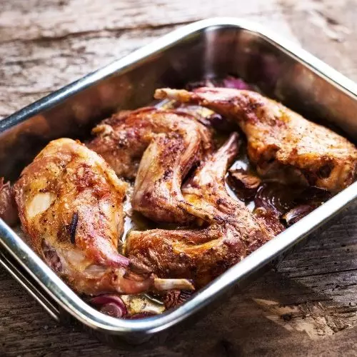

Ingredientes
- 1 conejo
- 1 cabeza ajos
- 1 vaso vino blanco
- aceite
- sal
Una de las formas más tradicionales de preparar el conejo es esta, con abundante ajos
Primero partimos el conejo en trozos pequeños y ponemos a freirlos en una sarten con abundantes aceite, a fuego lento. Le añadimos el vino y esperamos a que se dore
Explicacion de la receta 2
Explicacion de la receta 3